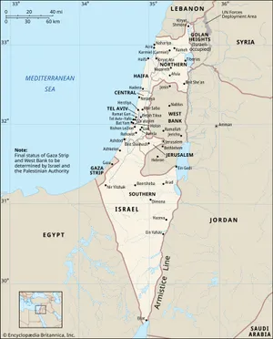

Israel is a country in the Middle East, located at the eastern end of the Mediterranean Sea. It's a unique combination of coastal plains, mountains, deserts, and significant bodies of water. The image above is a landscape picture of Israel's capital city, Jerusalem.
As of 2022, Israel's population comes to a total of 9,842,000 people. 73.2% of the population are Jews, 21.1% are Israeli citizens, and another 5.7% are classified as "others".
Travel Spots 1. Jerusalem 2. Tel Aviv 3. Nazareth 4. Haifa 5. Dead Sea 6. Eilat 7. Masada 8. Galilee 9. Akko (Acre) 10. Tiberias
Israel is One of the World's Safest Countries. Despite its geopolitical challenges, Israel is considered one of the safest countries for tourists, with a low crime rate and a strong focus on public safety.
Israel's Compulsory Military Service. In Israel, military service is mandatory for most citizens at the age of 18. This practice has shaped the country's culture and societal structure, fostering a sense of community and responsibility.
Israel's known as the "Start-Up Nation". Due to its high number of start-ups and tech companies per capita. The country invests heavily in research and development, leading to innovations in various fields such as cybersecurity, agriculture, and medicine.